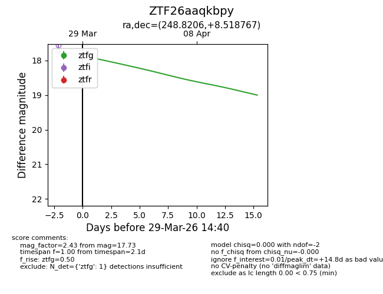
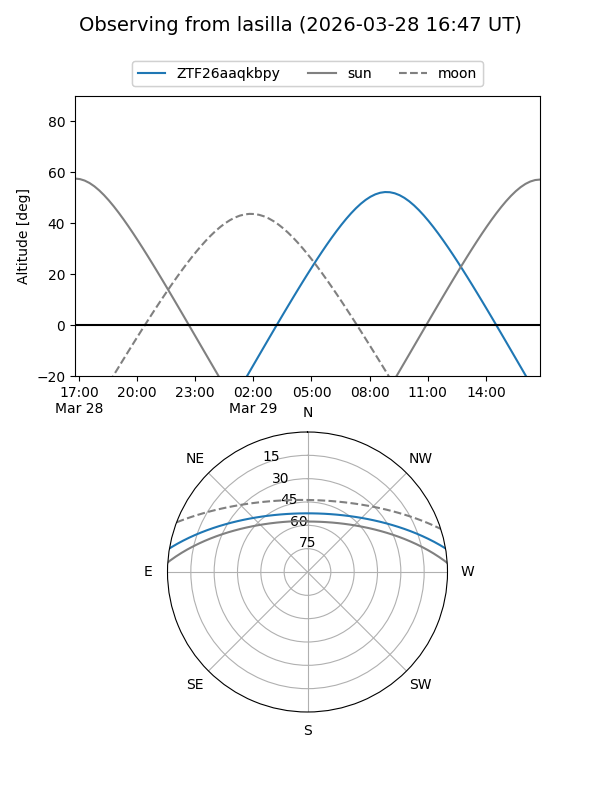
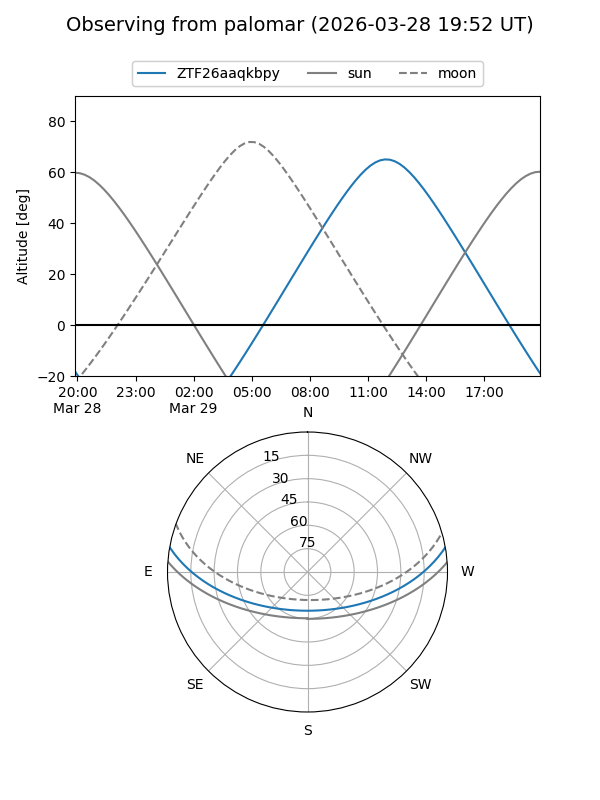
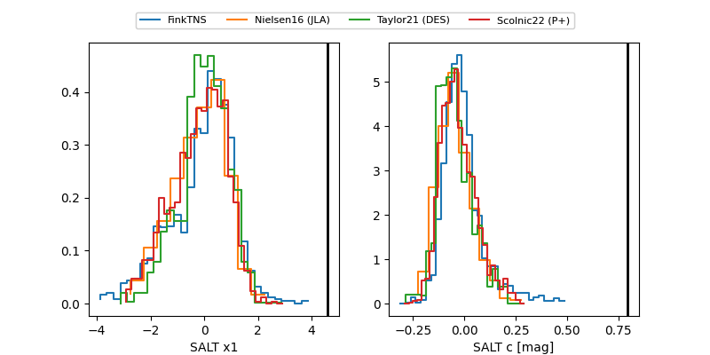

ZTF26aaqkbpy
Target ZTF26aaqkbpy at 2026-03-29 14:43
Aliases and brokers:
FINK: link
Lasair: link
ALeRCE: link
alt names
ZTF26aaqkbpy (ztf,fink_ztf)
Coordinates:
equatorial (ra, dec) = 248.8206,+8.51877
equatorial (HMS+DMS) = 16:35:16.94,+08:31:07.56
galactic (l, b) = (24.5613,+34.07141)
Flags:
Photometry:
last ztfg=17.73
1 ztfg detections
Lightcurve

Visibility


Additional plots
